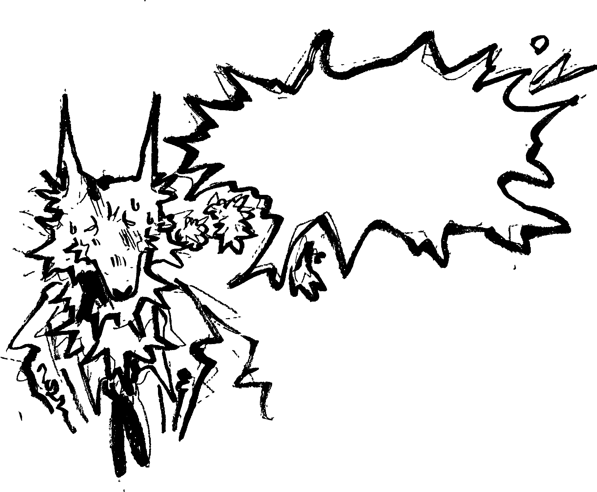
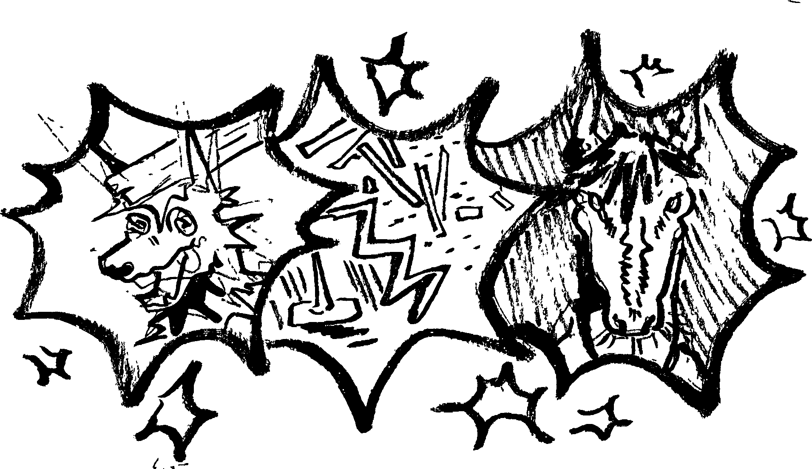
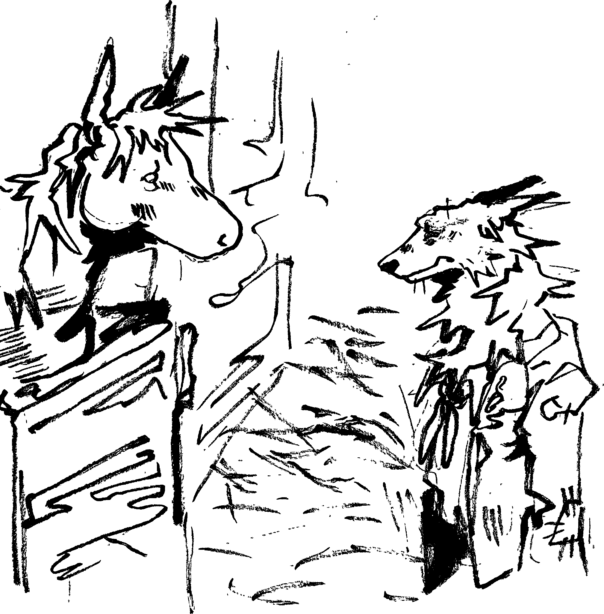

Repeating ideas in my mind of what could go wrong. Could a plank fall out and whack me on the head? What if I tripped and there just so happened to be a nail where I landed? How about the ceiling collapsing? Horses! Hey, those can be killers. Just look at their eyes. You know it’s just not safe here, anything can happen. I think the world is a scary place.   